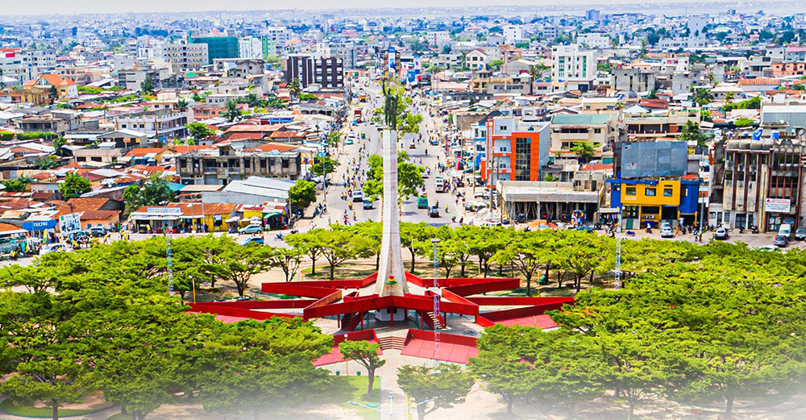

Découvrez le Bénin
Bienvenue sur notre site touristique dédié à la découverte des merveilles du Bénin.
Explorez nos pages pour en apprendre davantage sur les sites touristiques, la culture, et contactez-nous pour plus d'informations.
Contactez-nous
Pour toute question ou information supplémentaire, n'hésitez pas à nous contacter.
Votre message a été envoyé avec succès! On vous contactera bientôt